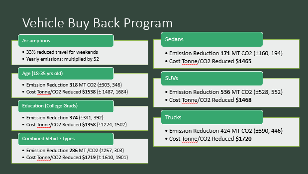

####Import data contains weekly emission REDUCTIONS because we worked in Access to see how much emission reduction we
###would get if we switched people over to EVs
#ID is the ID number associated with each survey respondent
#### size = 108 = average of quotas for all three vehicles = mean (c(125,90,111))
### ASSUMPTIONS:
#weekend emissions: multiply weekly emissions by 33% and add that as the weekend emission
#example: to sample just SUVs instead of all cars, only have SUVs in your input table in Access (subset table to SUVs only, subset function can be done in R)
#make points in presentation about the risk and what we can get from the different programs
#Add packages
library(tidyverse)
# Arguments
iseed = 34
nreps = 5
buyback_sample_size = 108
set.seed(iseed)
#import vehile emissions data
survey_data<-read.csv(file= "InputData.csv" , header=TRUE, sep=",", fill= FALSE)
# Covert the weekly emission reductions to annual
survey_data[,11]= survey_data[,11]*52
# Convert your now yearly emission reductions from kg to MT
survey_data[,11]= survey_data[,11]*0.001
#____________ Sample Buyback vehicles based on variable probabilities ______________
# sampling vehicles in buyback program by vehicle type probability
#### size = 108 = average of quotas for all three vehicles = mean (c(125,90,111))
#### Put the sample function within the forloop in order to do monte carlo iterations while you sample the amount of cars we can buy back with $500,000 budget
MTCO2_reduced_allvehicles<-matrix(0, nrow = nreps, ncol = 2)
for (car in (1:nreps)) {
#this line samples 108 vehicles from the 3196 population available (from access input file)
sample_vehicles<-sample(x = survey_data$ID, size = buyback_sample_size , replace = FALSE, prob = (survey_data[,6]))
# this line connects the survey data (info about reductions) with the ID of the records you sampled
join_vehicle_type<-survey_data[survey_data$ID %in% sample_vehicles,]
# this line sums the emission reductions from all samples
MTCO2_reduced_allvehicles[car,1]<-sum(join_vehicle_type[,11])
# this line divides the cost of vehicles by the sum of emission reductions ($/MT reduced annually)
MTCO2_reduced_allvehicles[car,2]<-(sum(join_vehicle_type[,10]))/(sum(join_vehicle_type[,11]))
}
# Calculate emissions reduced mean and confidence interval
mean(MTCO2_reduced_allvehicles[,1])
quantile(MTCO2_reduced_allvehicles[,1], probs = c(0.025,0.975))
# Calculate $/MT emissions reduced mean and confidence interval
mean(MTCO2_reduced_allvehicles[,2])
quantile(MTCO2_reduced_allvehicles[,2], probs = c(0.025,0.975))
#sampling specific vehicles now to see if there are more emission reductions: SEDAN
sedans<-subset(survey_data, survey_data$VehicleType=="Sedan")
emission.reduced.sedans<-matrix(0, nrow = nreps, ncol = 2)
for (s in 1:nreps) {
sedan.vehicles<-sample(sedans$ID,125,replace = FALSE)
Buyback.sedans<-sedans[sedans$ID %in% sedan.vehicles,]
emission.reduced.sedans[s,1]<- sum(Buyback.sedans$Total_Week_EmissionReduction_kgCO2)
# this line divides the cost of vehicles by the sum of emission reductions ($/MT reduced annually)
emission.reduced.sedans[s,2]<-(sum(join_vehicle_type[,10]))/(sum(join_vehicle_type[,11]))
}
# Calculate emissions reduced mean and confidence interval - SEDANS
mean(emission.reduced.sedans[,1])
quantile(emission.reduced.sedans[,1], probs = c(0.025,0.975))
# Calculate $/MT emissions reduced mean and confidence interval - SEDANS
mean(emission.reduced.sedans[,2])
quantile(emission.reduced.sedans[,2], probs = c(0.025,0.975))
#sampling specific vehicles now to see if there are more emission reductions: TRUCK
trucks<-subset(survey_data, survey_data$VehicleType=="Truck")
emission.reduced.trucks<-matrix(0, nrow = nreps, ncol = 2)
for (t in 1:nreps) {
truck.vehicles<-sample(trucks$ID,111,replace = FALSE)
Buyback.trucks<-trucks[trucks$ID %in% truck.vehicles,]
emission.reduced.trucks[t,1]<- sum(Buyback.trucks$Total_Week_EmissionReduction_kgCO2)
# this line divides the cost of vehicles by the sum of emission reductions ($/MT reduced annually)
emission.reduced.trucks[t,2]<-(sum(join_vehicle_type[,10]))/(sum(join_vehicle_type[,11]))
}
# Calculate emissions reduced mean and confidence interval - TRUCKS
mean(emission.reduced.trucks[,1])
quantile(emission.reduced.trucks[,1], probs = c(0.025,0.975))
# Calculate $/MT emissions reduced mean and confidence interval - TRUCKS
mean(emission.reduced.trucks[,2])
quantile(emission.reduced.trucks[,2], probs = c(0.025,0.975))
#sampling specific vehicles now to see if there are more emission reductions: SUV
SUVs<-subset(survey_data, survey_data$VehicleType=="SUV")
emission.reduced.SUV<-matrix(0, nrow = nreps, ncol = 2)
for (v in 1:nreps) {
SUV.vehicles<-sample(SUVs$ID,125,replace = FALSE)
Buyback.SUV<-SUVs[SUVs$ID %in% SUV.vehicles,]
emission.reduced.SUV[v,1]<-sum(Buyback.SUV$Total_Week_EmissionReduction_kgCO2)
# this line divides the cost of vehicles by the sum of emission reductions ($/MT reduced annually)
emission.reduced.SUV[v,2]<-(sum(join_vehicle_type[,10]))/(sum(join_vehicle_type[,11]))
}
# Calculate emissions reduced mean and confidence interval - SUV
mean(emission.reduced.SUV[,1])
quantile(emission.reduced.SUV[,1], probs = c(0.025,0.975))
# Calculate $/MT emissions reduced mean and confidence interval - SUV
mean(emission.reduced.SUV[,1])
quantile(emission.reduced.SUV[,2], probs = c(0.025,0.975))
# sampling vehicles in buyback program by age probability
Emissions_reduced_age<-matrix(0, nrow = nreps, ncol = 2)
for (car in (1:nreps)) {
vehicle_age_sample<-sample(x = survey_data$ID, size = buyback_sample_size , replace = FALSE, prob = (survey_data[,7]))
join_age<-survey_data[survey_data$ID %in% vehicle_age_sample,]
Emissions_reduced_age[car,1]<-sum(join_age[,11])
Emissions_reduced_age[car,2]<-(sum(join_age[,10]))/(sum(join_age[,11]))
}
# Calculate emissions reduced mean and confidence interval
mean(Emissions_reduced_age[,1])
quantile(Emissions_reduced_age[,1], probs = c(0.025,0.975))
# Calculate $/MT emissions reduced mean and confidence interval
mean(Emissions_reduced_age[,2])
quantile(Emissions_reduced_age[,2], probs = c(0.025,0.975))
# sampling vehicles in buyback program by education probability
Emissions_reduced_edu<-matrix(0, nrow = nreps, ncol = 2)
for (car in (1:nreps)) {
vehicle_edu_sample<-sample(x = survey_data$ID, size = buyback_sample_size , replace = FALSE, prob = (survey_data[,9]))
join_edu<-survey_data[survey_data$ID %in% vehicle_edu_sample,]
Emissions_reduced_edu[car,1]<-sum(join_edu[,11])
Emissions_reduced_edu[car,2]<-(sum(join_edu[,10]))/(sum(join_edu[,11]))
}
# Calculate emissions reduced mean and confidence interval
mean(Emissions_reduced_edu[,1])
quantile(Emissions_reduced_edu[,1], probs = c(0.025,0.975))
# Calculate $/MT emissions reduced mean and confidence interval
mean(Emissions_reduced_edu[,2])
quantile(Emissions_reduced_edu[,2], probs = c(0.025,0.975))Risk Analysis for Transportation Emission Reduction Policies
This project consisted of a risk analysis assessment for two hypothetical emission reduction plans for the city of Fort Collins, CO. This risk analysis quantified the amount of CO2e emissions reduced so I could show which policy plan achieved the most emissions reduced per tax dollar spent. In both hypothetical options, there was a budget of $500,000 to cut emissions from residential transportation.
Policy option 1: Buy back vehicles that are trucks (not large commercial trucks), SUVs, or sedans, to have residents purchase an electric vehicle. This program is targeting older vehicles in the fleet for the buy-back program because the incentives are too low for owners to participate that have newer vehicles.
The goal is to determine the amount of people that would participate in the buy back program from each population demographic (gender, education, age, reason for travel, vehicle type (SUV, sedan, truck).
Policy option 2: Small businesses are provided a $5,000 incentive and recognition as a climate smart company to support telecommuting by employees for two or more days of the week. This would reduce the amount of vehicle trips per week.
The goal is to see how many people and how many businesses would likely participate in the program
- Results
-
The cost to reduce CO2e in both policy options were too high. The dollar amount cost per 1 tonne of emissions reduced was not worth investing $500,000 in. It is higher than the current social cost of carbon.


R Script to assess policy option 1
R Script to assess policy option 2
#Set up dsata frame with business data and propoabilities of employees staying home, and how many already telework
### Note: 100 businesses can participate in program given the $5,000 incentive with the $500,000 budget
nreps=5
iseed=1234
set.seed(iseed)
smallbus<-data.frame("ID"= 1:11503, "Type"="S", "Min"=1, "Max"=10, "PropTC"=0.09, "ProbPart"=0.09)
medbus<-data.frame("ID"= 11504:15157, "Type"="M", "Min"=11, "Max"=30, "PropTC"=0.031, "ProbPart"=0.12)
largebus<-data.frame("ID"= 15157:15660, "Type"="L", "Min"=31, "Max"=50, "PropTC"=0.064, "ProbPart"=0.17)
businesses_data<-rbind(smallbus,medbus,largebus)
#import emissions (contains weekly emissions, and emission reductions from not communting to work 2-5 days)
Work_commute_data<-read.csv(file= "GreenBusinessData.csv" , header=TRUE, sep=",", fill= FALSE)
# Covert the weekly emission reductions to annual
Work_commute_data[,8]= Work_commute_data[,8]*52
# Convert your now yearly emission reductions from kg to MT
Work_commute_data[,8]= Work_commute_data[,8]*0.001
#Randomly select businesses and determine # of additional employees that will telework in a nested forloop to sample
Selected_Businesses<-matrix(0, nrow = 100, ncol = 1)
Selected_employees<-matrix(0, nrow = 100, ncol = 1)
people<-matrix(0, nrow = nreps, ncol = 1)
for (a in 1:nreps) {
Businesses<-sample(businesses_data$ID, size = 100, replace = F, prob = businesses_data$probPart)
join<-businesses_data[businesses_data$ID %in% Businesses,]
for (b in 1:100) {
Selected_Businesses[b,]<-sample(join[b,3]:join[b,4], size = 1)
Selected_employees<-Selected_Businesses-join[b,5]*Selected_Businesses
Selected_employees<-round(Selected_employees)
}
people[a,1]<-sum(Selected_employees)
}
#Make for loop like the ones from the buy back program, sample telecomuting emissions$ID, sample size is the people selected in the nested forloop above
### Sample for 2 days of working remotely
Emissions_reduced_2days<-matrix(0,nrow = nreps, ncol = 2)
for (t in (1:nreps)) {
people_sample<-sample(x=Work_commute_data$ID, size = Selected_employees[t,], replace = TRUE)
join_emissions<-Work_commute_data[Work_commute_data$ID %in% people_sample,]
Emissions_reduced_2days[t,1]<-sum(join_emissions[,9])
Emissions_reduced_2days[t,2]<-500000/sum(join_emissions[,9])
}
# Calculate 2day emissions reduced mean and confidence interval
mean(Emissions_reduced_2days[,1])
quantile(Emissions_reduced_2days[,1], probs = c(0.025,0.975))
# Calculate $/MT emissions reduced mean and confidence interval
mean(Emissions_reduced_2days[,2])
quantile(Emissions_reduced_2days[,2], probs = c(0.025,0.975))
### Sample for 3 days of working remotely
Emissions_reduced_3days<-matrix(0,nrow = nreps, ncol = 2)
for (t in (1:nreps)) {
people_sample<-sample(x=Work_commute_data$ID, size = Selected_employees[t,], replace = TRUE)
join_emissions<-Work_commute_data[Work_commute_data$ID %in% people_sample,]
Emissions_reduced_3days[t,1]<-sum(join_emissions[,10])
Emissions_reduced_3days[t,2]<-500000/sum(join_emissions[,10])
}
# Calculate 3day emissions reduced mean and confidence interval
mean(Emissions_reduced_3days[,1])
quantile(Emissions_reduced_3days[,1], probs = c(0.025,0.975))
# Calculate $/MT emissions reduced mean and confidence interval
mean(Emissions_reduced_3days[,2])
quantile(Emissions_reduced_3days[,2], probs = c(0.025,0.975))
### Sample for 4 days of working remotely
Emissions_reduced_4days<-matrix(0,nrow = nreps, ncol = 2)
for (t in (1:nreps)) {
people_sample<-sample(x=Work_commute_data$ID, size = Selected_employees[t,], replace = TRUE)
join_emissions<-Work_commute_data[Work_commute_data$ID %in% people_sample,]
Emissions_reduced_4days[t,1]<-sum(join_emissions[,11])
Emissions_reduced_4days[t,2]<-500000/sum(join_emissions[,11])
}
# Calculate 4day emissions reduced mean and confidence interval
mean(Emissions_reduced_4days[,1])
quantile(Emissions_reduced_4days[,1], probs = c(0.025,0.975))
# Calculate $/MT emissions reduced mean and confidence interval
mean(Emissions_reduced_4days[,2])
quantile(Emissions_reduced_4days[,2], probs = c(0.025,0.975))
### Sample for 5 days of working remotely
Emissions_reduced_5days<-matrix(0,nrow = nreps, ncol = 2)
for (t in (1:nreps)) {
people_sample<-sample(x=Work_commute_data$ID, size = Selected_employees[t,], replace = TRUE)
join_emissions<-Work_commute_data[Work_commute_data$ID %in% people_sample,]
Emissions_reduced_5days[t,1]<-sum(join_emissions[,12])
Emissions_reduced_5days[t,2]<-500000/sum(join_emissions[,12])
}
# Calculate 5day emissions reduced mean and confidence interval
mean(Emissions_reduced_5days[,1])
quantile(Emissions_reduced_5days[,1], probs = c(0.025,0.975))
# Calculate $/MT emissions reduced mean and confidence interval
mean(Emissions_reduced_5days[,2])
quantile(Emissions_reduced_5days[,2], probs = c(0.025,0.975))